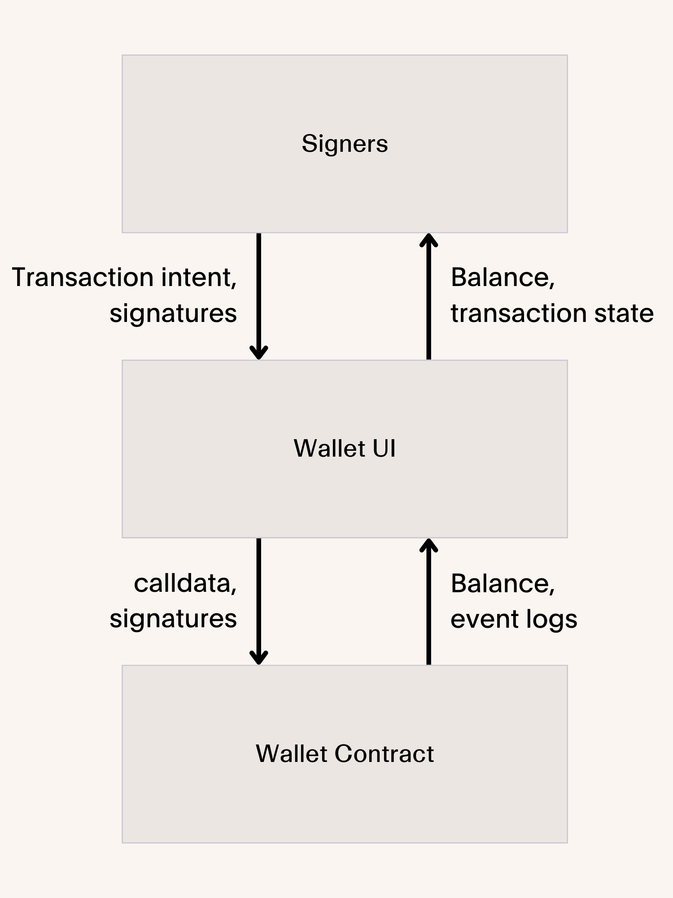
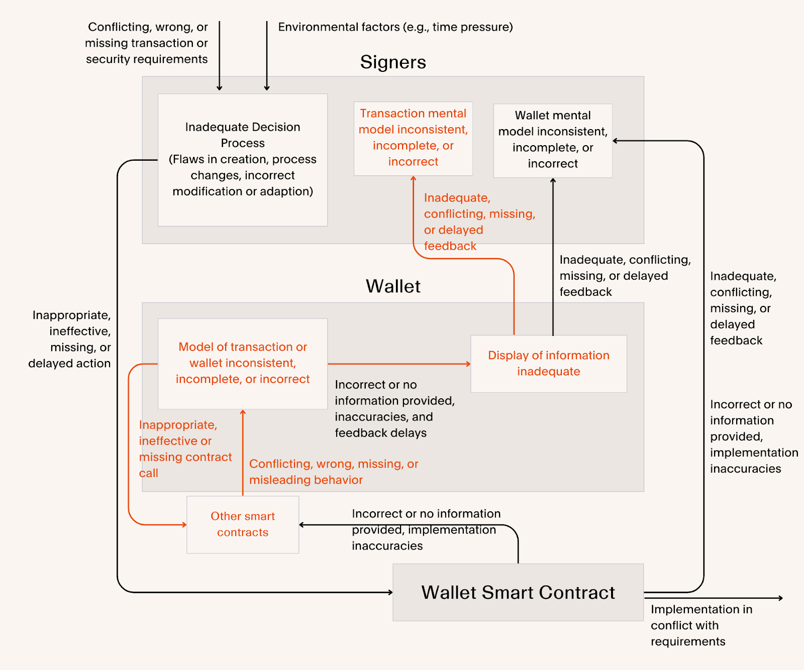

The Bybit Lesson: Rethinking Treasury Wallet Security
Last month, a crypto founder confidently told me their $30 million treasury was secure. "We already use a multisig," they said with the certainty that comes from following conventional wisdom. Last week, Bybit lost $1.5 billion despite using that same protection.
This misplaced confidence reminded me of something I've seen before, in a very different context. In 2014, I stood in the Mojave Desert and watched as Virgin Galactic's SpaceShipTwo broke apart in the sky. Just months into my first job and having recently met the pilot's family, that tragedy wasn't abstract—it was personal. It marked the beginning of a decade-long journey exploring how complex systems fail.
As I moved through systems safety work in various high-stakes environments, one truth became increasingly clear: our intuitions about safety are often dangerously wrong.
We think safety means reliable parts. We think catastrophes happen when something breaks. We think multiple approvals prevent disasters. But in complex systems—whether rockets or crypto treasuries—the most dangerous failures happen when everything works exactly as designed, just not how we expected.
The Bybit hack is now the largest cryptocurrency theft in history. But what's more troubling isn't the size—it's how it happened despite supposedly robust protections. As I looked through the details, I saw the same patterns that haunted me since that day in the Mojave: flawed assumptions about how systems interact, misplaced confidence in technical solutions, and the mistaken belief that multiple signatures alone create security.
So what actually happened? And more importantly, what can it teach us about building truly secure systems? What can it teach me about building a platform businesses rely on to manage their finances?
What Actually Happened at Bybit
Before we can understand why this happened, we need to establish what happened. Here's the timeline as we know it:
- February 19, 2025: Attackers deployed a malicious contract, setting the stage two days in advance.
- February 21, 2025, ~11:30 AM UTC: During a routine transfer of ETH from a Safe wallet, attackers executed their exploit.
- February 21, 2025, ~12:30 PM UTC: First suspicious outflows were detected internally at Bybit.
- February 21, 2025, ~1:00 PM UTC: Bybit CEO Ben Zhou confirmed the breach publicly.
- February 21-23, 2025: Over 580,000 user withdrawal requests were processed as Bybit secured bridge loans to maintain liquidity.
- February 22, 2025: Bybit launched a recovery bounty program offering up to $140 million for assistance in fund recovery.
The attack leveraged what security researchers call a "blind signing exploit." When Bybit's operators approved what looked like a standard transfer to their warm wallet, they were actually interacting with a malicious smart contract. The interface showed them one transaction, while the actual transaction did something entirely different.
Once control was compromised, approximately 401,347 ETH ($1.4 billion) along with additional tokens were rapidly drained across dozens of different wallets.
Does this sound like a technical failure? It wasn't. It was a failure of understanding—a gap between how people thought the system worked and how it actually worked.
Why Safety Isn't What You Think
When something goes wrong, our first instinct betrays us. We search for the broken part, the negligent operator, the flawed component. This instinct—nearly universal in its appeal—offers the comfort of simplicity: find the culprit, fix the part, restore safety.
But in complex systems like blockchains or aerospace, this instinct leads us astray. I've witnessed rockets explode not because components broke, but because perfectly functioning parts interacted in ways nobody predicted. The systems weren't failing—they were doing exactly what we told them to do, just not what we meant.
Systems thinking flips how we think about safety. Safety doesn't come from having good parts—it comes from how those parts work together. Accidents occur not when things break, but when relationships violate our assumptions about how things work.
The Bybit hack reveals precisely these broken relationships.
The Hidden Relationships in Wallet Security
To understand how the Bybit hack succeeded despite multiple protective layers, we need to map the relationships between four key elements:
- Human Operators who believed they were authorizing a routine transfer
- Wallet Interface that was supposed to accurately display transaction details
- Smart Contract that enforced multi-signature requirements
- Malicious Contract designed to exploit gaps between what was shown and what was executed
Let's visualize this relationship structure:

This high-level view reveals something important: each component isn't just connected to the others—it maintains assumptions about how the others work. For security to function, these mental and computational models must accurately reflect reality.
The critical vulnerability wasn't in any single component but in how information flowed between them. The interface displayed transaction details that appeared legitimate, but the actual execution differed fundamentally from what signers believed they approved.
If we want to understand how control systems can fail, we need to look at all the ways a control action can become dangerous. It turns out there are exactly four ways this can happen in any system—whether we're talking about space shuttles, nuclear plants, or crypto wallets:
- What happens if a necessary safety action isn't taken?
- What happens if an unsafe action is taken?
- What happens if an action comes at the wrong time?
- What happens if a continuous action stops too soon or lasts too long?
When we apply this framework to the specific control structure in the Bybit case, we can see exactly where the system broke down:

This detailed analysis reveals multiple vulnerabilities that combined to create the perfect conditions for the attack:
- Signers didn't verify beyond what the interface showed
- The interface displayed a legitimate-looking transaction while enabling a malicious one
- Security alerts came after control was already lost
- Transaction monitoring stopped at signature verification rather than tracking execution results
These vulnerabilities didn't exist in isolation—they created a perfect storm when combined. The wallet system failed not because of one broken part, but because the entire network of relationships had hidden flaws.
I've seen this pattern before. After the SpaceShipTwo accident, investigators discovered the failure wasn't that a component broke—it was that the pilot performed the correct action at the wrong time, with catastrophic results. Everything worked as designed, just not as intended.
The Real Problem: Mental Models
What strikes me most about this incident isn't just the technical exploit—it's how it preyed on human understanding. The attackers didn't have to break encryption or steal private keys. They exploited the gap between what operators thought they were doing and what the system was actually doing.
This gap exists in every complex system. In safety engineering, we call it a process model flaw—when the controller's understanding of the system doesn't match reality. It's not about technical failure but about the relationship between humans and technology.
Consider what's actually happening when someone authorizes a blockchain transaction:
- A person with certain beliefs about what will happen
- Controls that let them affect the system's behavior
- Feedback that tells them what's happening
Safety emerges from how these pieces work together. When controls are confusing, when feedback is misleading, or when mental models are wrong, accidents happen regardless of how reliable the individual components are.
The attackers at Bybit exploited precisely this dynamic. They didn't break the wallet—they broke the relationship between operators and the wallet.
Beyond Individual Components
Looking deeper, I spotted several problems that contributed to this incident:
Over-reliance on Multi-signature
Bybit, like many crypto organizations, treated multi-signature as a complete security solution rather than one component of a comprehensive system. This created a single point of failure: if the signing process could be compromised, the entire security model would collapse.
I see this pattern repeatedly. Companies implement a technically sophisticated security feature, then stop worrying. But security isn't about individual features; it's about relationships between features.
Inadequate Defense-in-Depth
There appeared to be limited secondary verification systems that could catch what the primary system missed.
In aerospace, I never saw a critical system with just one verification method. We built redundancy not just in components but in verification approaches—different ways of confirming the same thing. Safety critical measurements almost always have 3 sensors - if one is different, the other two can vote the other out.
Operational Culture
While we don't have clear evidence of safety culture issues at Bybit, the routine nature of transfers potentially created complacency.
I've witnessed this across industries. The more routine an operation becomes, the less attention it receives. The more technical a system gets, the less people feel qualified to question it. In one rocket program I worked on, we found that operators stopped carefully reviewing checklists for procedures they'd performed dozens of times—until a near-miss forced a cultural reset.
Design Flaws in User Interfaces
The wallet interface failed to present critical information in a way that would make malicious transactions distinguishable from legitimate ones.
This is perhaps the most subtle but important factor. The interface should help operators build an accurate mental model of what's happening. Instead, it misled them—either by design or by omission.
Building Better Systems
How might we build systems resilient against these kinds of failures? The answer lies not in more technical sophistication, but in better alignment between how systems work and how people understand them—in relationships that naturally limit damage even when something goes wrong.
When I map out the control failures at Bybit, I see patterns I've encountered before. Each failure points to a principle that could have prevented it. These aren't just theoretical—they're practical lessons drawn directly from the gaps in the system:
1. Role-Based Access Control
Traditional multisig wallets like Safe mitigate the risk of a single signer accepting a malicious transaction, but each transaction still exposes the entire account. This is like having multiple people need to turn keys to launch a missile, but once launched, the missile can hit any target.
What's the alternative? Embed granular role-based permissions within smart contracts themselves. This ensures routine operations don't require full control of the wallet.
I once worked with a space launch system where the person who could initiate countdown couldn't abort it, and the person who could abort couldn't change the flight path. This separation of roles meant no single compromised position could cause catastrophic damage.
For crypto treasuries, this means creating specific roles with limited permissions and requiring different authentication methods for different transaction types.
2. Clear Signing Practices
Replace blind signing with clear signing protocols that make transaction details fully transparent and verifiable through multiple independent channels.
Safe cited the inability for hardware wallets to interpret Safe's smart contract calls as a contributing factor in the loss. I think this misses the point—Safe's UI allows many authentication methods, but none maintained an accurate model of the wallet and transaction.
The goal isn't just to show information but to help operators build accurate mental models. Can they verify transaction intent, destination, and amount through separate channels before approval? If not, the system is vulnerable.
3. Build Multi-Layered Verification Systems
Create verification systems that work on multiple levels—both human and automated—and operate independently of each other.
In spacecraft operations, we never rely on a single verification path. Critical commands pass through multiple systems—human approvals, command validation, telemetry feedback, and automated simulation. Why? Because if all verifiers look at the same display or use the same process, a single flaw compromises everything.
When I worked on automated test systems for rocket engines, we didn't just check that commands were received—we modeled what would happen when they executed. The system would say, "If you execute this command sequence, the engine will exceed temperature limits in 3 seconds." This simulation caught errors that visual inspection couldn't.
For treasury operations, this means
- Creating separate paths to verify each transaction
- Having automated systems that simulate transaction effects before execution
- Deploying real-time monitoring that evaluates the impact of contract interactions
- Ensuring that verification systems have different failure modes—if one misses something, another catches it
The goal is redundancy with diversity. Different techniques looking at the same transaction from different angles create a verification mesh that's much harder to defeat than any single layer of protection.
4. Create Defense-in-Depth for Treasury Operations
Develop layered security systems that don't rely on any single control mechanism.
In aerospace, we combine physical controls, procedural controls, and software controls. A critical action might require a physical key, a software password, and a second person's verification—three different types of controls that must all align.
For treasury operations, combine technical controls with procedural controls and organizational controls. Create a web of protections so that a failure in one area doesn't compromise the entire system.
5. Workflows Should Match Business Operations
Design security systems that accommodate how businesses actually operate rather than forcing business processes to conform to security limitations.
I've seen organizations create workarounds to security systems that were too rigid for their operations—creating more risk than the systems prevented. The most secure system is one that people actually use as designed.
Create customizable approval workflows that adapt to different transaction types, amounts, and contexts while maintaining security. Make the system work with human operators, not against them.
What This Means For Your Assets
For those holding crypto assets, personally or as a business, the implications of this incident extend beyond Bybit:
Individual users face the same blind signing vulnerability across many wallet interfaces. When interacting with DApps, the transaction you see may bear little resemblance to what actually executes. Consider wallets that verify transactions through multiple channels—tools like Stackup's policy engine that simulate each transaction before execution.
For businesses, your treasury operations likely share Bybit's vulnerabilities. The critical question isn't whether your wallet requires multiple signatures, but what happens when operators are shown misleading information. The solution combines role-based permissions, transaction limits, and verification redundancy. Above all, recognize that security transcends technology—it encompasses people, processes, and their interactions.
A New Perspective on Crypto Safety
The irony isn't lost on me that companies building the future of finance are often managing their treasuries with tools that wouldn't pass muster in traditional finance. As the Bybit incident shows, this gap between promise and practice creates unacceptable risk.
The patterns I've seen in aerospace and crypto are remarkably similar. In both domains, we tend to focus on technical solutions while underestimating human factors, system dynamics, and the relationships between components.
What struck me most about the Bybit hack wasn't technical sophistication—it was how it exploited the same vulnerabilities I first recognized watching SpaceShipTwo break apart. The attackers didn't need to break encryption or steal private keys. They simply had to understand the system better than the people operating it.
This realization changes how we should approach crypto security. Instead of asking whether a component might fail, we need to ask how components interact. Instead of focusing solely on preventing failures, we should focus on creating the right relationships between parts.
The good news? The technology to solve these problems exists today. By applying systems thinking to cryptocurrency security and implementing proper controls, we can build treasury management systems that offer both the power of blockchain and the safety controls that serious businesses require.
The future of finance is being built now. As someone who has witnessed both the promise of technological innovation and its catastrophic failures, I believe we have a responsibility to build it on a foundation of security that can withstand the challenges ahead. Not just with better parts, but with better relationships between those parts.